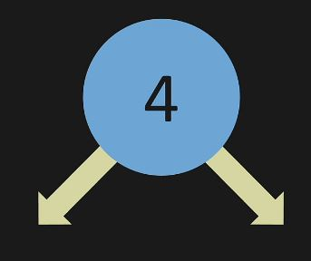
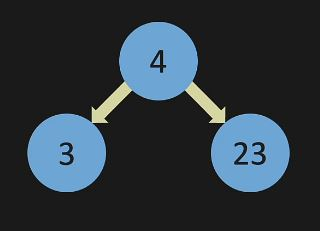
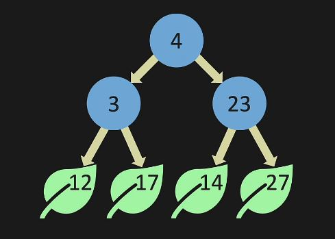

Binary and binary search trees
Introduction
Binary trees are another powerful data structure that can be used to store a collection of data. It allows for smaller memory allocation without requiring the element shifts for insertion and deletion operations. It has an efficient time complixity to search an item within the tree.
Suppose we have a basic calss containing a single value its left and right point to None:
class ListNode:
def __init__(self, data):
self.data = data
self.left = None
self.right = None
a = ListNode( 4 )

The left and right arrows are pointing at None, meaning that there is no other nodes in our data structure because this is a single node and we can create two more nodes and assign them to left and right pointers.
This is how the nodes will look like. The node 3 and 23 are added to the left and right branches. Nodes 3 and 23 both have left and right branches pointing toards Non, since there is no other node that is connected to the data structure.
Lets create some more nodes and attach them to the node 3 and node 23.
d = ListNode ( 12 )
e = ListNode ( 12 )
f = ListNode ( 12 )
g = ListNode ( 12 )
# We connect node b to d and e.
# We also connect node c to f and g as left and right pointers
b.left = d
b.right = e
c.left = f
c.right = g
 And this is how a tree data structure is built. For the rest of this document, we design a binary search tree data structure that supports insert, contain, minimum methods. We will also describe the concepts of tree traversals methods.
Insert
The insert method will add a new data point to the tree structure depending on its value. The property of the binary search tree is that left node should be smaller than main node and the main node should be smaller than the right node. And this should be true in the entire tree data structure. If there is a duplicate value, the method will return False. Otherwise, the method will go left and right untill it finds right spot for the new number to be added.
def insert(self, data):
# create the new node
new_node = ListNode(data)
# check if root is empty
if self.root is None:
# if root is empty, make the root equal to new node
self.root = new_node
return
# create a temp node equal to the root
temp = self.root
# Loop over the nodes. If data is smaller than the node, go left, otherwise go right.
while temp:
# If data is equal to the node return False
if temp.data == data:
return False
# If data is smaller than the node, check if it is None.
# If None, make it equal to new node, else go left.
if data < temp.data:
if temp.left is None:
temp.left = new_node
return
temp = temp.left
# If data is bigger than the node, check if it is None.
# If None, make it equal to new node, else go right.
else:
if temp.right is None:
temp.right = new_node
return
temp = temp.right
contain
The contain method searches the binary search tree data structure and returns True if the element with value data exists in our tree structure. If it doesn't exist, it will return False. It uses the property of binary search tree and moves left and right in the tree until it reaches the leaf node. If it sees the data in the tree, it returns True, otherwise, it returns False.
def contain(self, data):
# create a temp node equal to the root
temp = self.root
# loop over the nodes
while temp:
# if data is equal to the node, return true
if temp.data == data:
return True
# if data is smaller than the node, go left. Otherwise go right.
if data < temp.data:
temp = temp.left
else:
temp = temp.right
# return False if no node is equal to the data
return False
minimum value
Minimum value method takes a node in the binary search tree and return the smallest element within that sub-tree. If we start from the root node, it returns the smallest element within the entire tree. It is a simple method which goes to the left nodes until the leaf nodes is reached. Then the leaf node at the farthest left is returned.
@staticmethod
def min_value_node(cur_node):
# minimum node is the node the bottom left of the tree.
# So go left until it is None.
while cur_node.left is not None:
cur_node = cur_node.left
return cur_node
Tree traversals
1. Breath first search (BFS)
def BFS(self):
# initiate a list for result and one for the queue
results = []
queue = []
# check if root is empty
if self.root is None:
return results
# append the root to the queue
queue.append(self.root)
# loop until there is a node in the queue
while queue:
# remove the first element
new_node = queue.pop(0)
# add its value to the results
results.append(new_node.data)
# if left node is not none, add that to the queue
if new_node.left is not None:
queue.append(new_node.left)
# if the right node is not None, add that to the queue as well
if new_node.right is not None:
queue.append(new_node.right)
# return the results list
return results
2. Depth first search (DFS) pre-order
4. Depth first search (DFS) in-order
Examples problems with binary tree
1. Example 1
Solution Code
2.Example 2
Solution Code
3. Example 3
Solution Code
4. Example 4
Solution Code
5. Example 5
Solution Code
Next Steps
This file will continuously be updated.